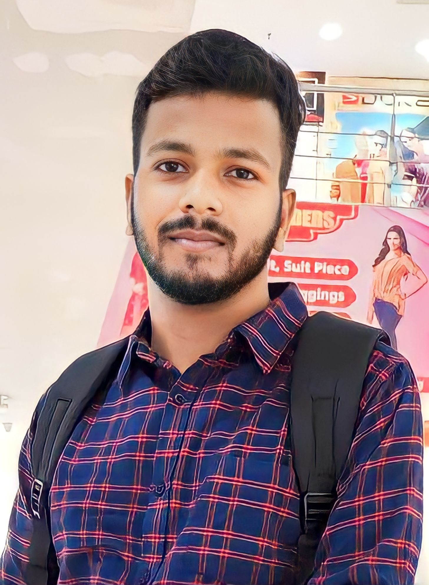

Strong in design and integration with intuitive problem-solvingskills. Passionate about implementing in lunching new projects. Ability to translate business requirments into technical solutions. Looking to start the career as an entry-level software engineer with a reputed firm driven by technology.

TRIDENT ACADEMY OF TECHNOLOGY, BHUBANESWAR
contact:-
shreeramjena929@gmail.com
+91-9337358995
At-Narsinghpur,Po-Gahaga narasinghpur,Block- Derabish ,Dist-Kendrapara,Odisha,pin-754210
linkedin.com/in/shreeramjena/
EDUCATION
Master’s in Computer Application (Persuing)
TRIDENT ACADEMY OF TECHNOLOGY, BHUBANESWAR
Bachelor of Science| 65% (2019-2022)
HNS Mahavidyalaya degree college,Chandol
Intermediate in Science | 67% (2016-2018)
HNS MAHAVIDYALA JR. College
Matriculation | 70% (2016)
JNV BARO,KENDRAPARA
TECHNICAL SKILLS
Microsoft word
Microsoft Excel
Tally
Microsoft Power point
My SQL
C
JAVA
Python
HTML
CSS
JAVA script
BOOTSTRAP
ACHIEVEMENTS
E-START BOOTCAMP
It is organized by TRIDENT ACADEMY OF TECHNOLOGY
in collaboration with STARTUPODISHA.
Successfully
completed the project graduation in 2022.
Conducted blood donation camp to preach importance
of donating blood
Awarded by
UTKAL KALA ACADEMY for Painting.
SOFT SKILLS
Interpersonal Skills
Verbal and Written Communication Skills.
Team-Worker
Adaptive Leadership
Accountable and Responsible.
Continuous Learning
AVOCATION
Creative Writing
Designing ideas
Photography
Reading books
Dancing
LANGUAGE KNOWN
ENGLISH
HINDI
ODIA